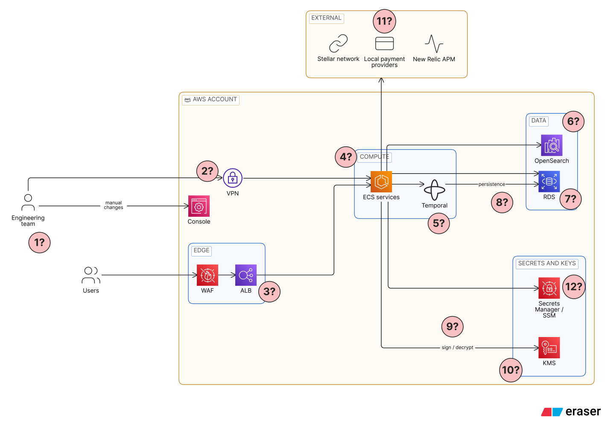
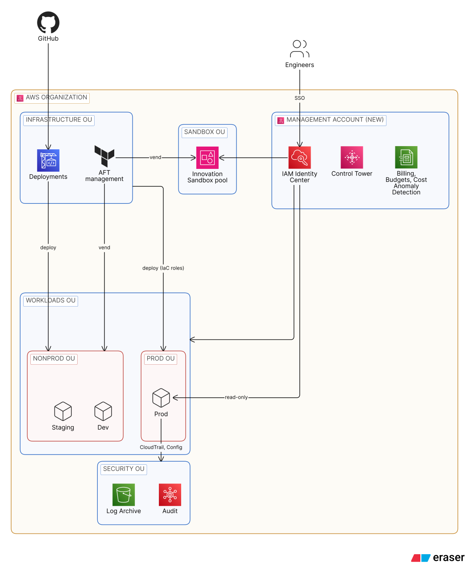
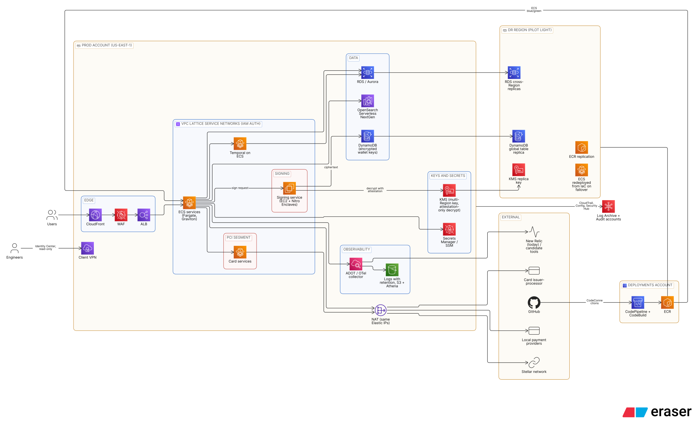

Prueba técnica · Platform / Cloud Engineer
Autor: Camilo Rozo
Repositorio (documentos, libros de costos y esqueleto de Terraform):
https://github.com/Cerozob/puruebatecnica-cloudengineer/tree/claude/optimistic-feynman-0baipi
Diagramas editables (Eraser):
https://app.eraser.io/workspace/Ij84o5Dz4IH3ScJQkZkG
La numeración de los diagramas, su revisión visual y la exportación las hice yo.
terraform fmt y terraform validate.
Kova opera en una sola cuenta de AWS donde conviven producción y no productivo, sin separación formal y sin infraestructura como código: todo se creó y se modifica a mano en la consola.
Los problemas principales:
Cada marca ? del diagrama es una suposición o una ambigüedad. Todas están, junto con el resto, en la tabla de suposiciones.
| Marca | Componente | Suposición |
|---|---|---|
| 1? | Equipo | 10 ingenieros con dos turnos de guardia 24/7 en varias zonas horarias. |
| 2? | VPN | Producto y proveedor desconocidos; da acceso de red a la VPC y a los servicios de ECS. |
| 3? | Balanceadores | Un ALB por servicio. |
| 4? | ECS | Hasta 100 servicios, con un promedio de 2 vCPU y 4 GB por servicio; número de clusters, tipo de lanzamiento y autoescalado desconocidos (se asume autoescalado configurado). |
| 5? | Temporal | Self-hosted en ECS, en la misma cuenta. |
| 6? | OpenSearch | Dominio administrado de unos 100 GB; configuración y propósito (búsqueda o logs) desconocidos. |
| 7? | RDS | Hasta 30 bases con motores, tamaños y propósitos diversos; en promedio, instancias grandes. |
| 8? | Persistencia de Temporal | Se desconoce qué base y qué motor la respaldan; se asume una de las bases de RDS. |
| 9? | Uso de KMS | Se desconoce cómo usan KMS los servicios (cifrado o firma). |
| 10? | Llaves de firma de wallets | Guardadas en una base de RDS, no como llaves de KMS por wallet. |
| 11? | Proveedores de pagos | Tienen en lista blanca las IPs de salida de Kova; esas direcciones no pueden cambiar. |
| 12? | Secretos de configuración | En Secrets Manager / SSM SecureString (práctica recomendada ya seguida). |


Las decisiones detrás de cada paso están en decisiones_short.md.
Cómo llevar a Kova de su estado actual a la arquitectura objetivo en 12 meses, sin downtime perceptible en un sistema financiero 24/7. El plan sigue las fases de la guía de AWS para migraciones grandes (evaluar, movilizar, migrar y modernizar) y las estrategias 7R. Las decisiones citadas están en decisiones_full.md.
Producción no se mueve. La cuenta actual se queda como cuenta de producción (ADR-002); lo que sale es todo lo demás. Por eso la "migración" es en realidad una limpieza de la cuenta de producción más la construcción de la plataforma alrededor de ella:
| Estrategia (7R) | Qué cubre |
|---|---|
| Retain | Producción: se queda en su cuenta y se adopta en IaC y en la organización. |
| Rehost / Relocate o rebuild | No productivo: sale a staging y dev, según la carga (ADR-012). |
| Retire | Recursos huérfanos encontrados en el inventario. |
| Replatform / Refactor | Modernización posterior: Fargate y Graviton, Aurora, OpenSearch Serverless NextGen, VPC Lattice, servicio de firma. |
1?–12?.| Componente | Por qué no se toca |
|---|---|
| La cuenta de producción (no se cambia de cuenta) | Moverla es el mayor riesgo de downtime (ADR-002). |
| DNS, IPs públicas y de salida | Los proveedores de pagos tienen en lista blanca las IPs actuales (ADR-020). |
| Integración con la red Stellar | Pieza crítica sin contexto suficiente (ADR-032). |
| Temporal | El equipo lo conoce; migrarlo no aporta en 12 meses (ADR-016). |
| Llaves de KMS existentes | No se pueden mover entre cuentas (ADR-022). |
| CloudFront, WAF y ALB | Ingreso de clientes; solo se importan a IaC (ADR-018). |
| New Relic (durante la migración) | Es la visibilidad que necesitamos mientras cambiamos todo lo demás. |
environment, service, owner, data-classification).Criterio de salida: el 100 % de los recursos tiene environment y dueño; lista de huérfanos aprobada.
Criterio de salida: la cuenta de producción está en la organización, con CloudTrail centralizado y sin ningún incidente atribuible.
Se importa por componentes, de menor a mayor riesgo, con la regla de plan sin cambios (ADR-008):
En paralelo:
Vuelta atrás: un import no cambia el recurso; si algo sale mal se quita del estado con terraform state rm. Un redespliegue blue/green vuelve solo al servicio anterior.
Criterio de salida: toda la producción está en Terraform y ninguna persona tiene permisos de escritura en producción.
| Oleada | Contenido | Estrategia |
|---|---|---|
| 1. Piloto | 2 o 3 servicios de dev sin estado | Rebuild con Terraform en la cuenta dev |
| 2. Dev | El resto de dev | Rebuild o rehost según la carga |
| 3. Staging | Staging y sus bases | Rehost con snapshots compartidos, o seeds nuevos |
| 4. Retiro | Recursos no productivos en la cuenta de producción | Detener, snapshot, cuarentena de 30 días y borrar |
Vuelta atrás: hasta el fin de la cuarentena, los recursos viejos siguen en la cuenta de producción, detenidos y recuperables.
Todo se construye en paralelo y se activa de a poco:
| Fase | M1 | M2 | M3 | M4 | M5 | M6 | M7 | M8 | M9 | M10 | M11 | M12 |
|---|---|---|---|---|---|---|---|---|---|---|---|---|
| 0. Evaluar | ■ | |||||||||||
| 1. Fundación | ■ | ■ | ■ | |||||||||
| 2. Producción a IaC | ■ | ■ | ■ | ■ | ||||||||
| 3. Sacar no productivo | ■ | ■ | ■ | ■ | ■ | |||||||
| 4. Plataforma objetivo | ■ | ■ | ■ | ■ | ■ | ■ | ||||||
| 5. Modernizar | ■ | ■ | ■ | ■ | ■ | ■ | ■ |
Con un equipo de 10 personas y guardias 24/7, se asume que dos personas dedican la mayor parte de su tiempo a este plan y el resto participa por servicio.
| Riesgo | Mitigación |
|---|---|
| Un recurso "de pruebas" lo usa producción | Mapa de dependencias de la fase 0 y cuarentena de 30 días antes de borrar. |
| Un import cambia un recurso de producción | Regla de plan sin cambios; revisión obligatoria del plan en el pipeline. |
| Quitar permisos humanos deja al equipo sin acción en un incidente | Rol break-glass probado antes de quitar permisos; pipeline de despliegue rápido. |
| Una firma incorrecta del servicio nuevo | Modo sombra con comparación exacta y corte por grupos de wallets. |
| El DR no cumple el RTO | Simulacros periódicos del terraform apply en la región de DR. |
| El equipo se satura | Fases secuenciales, oleadas pequeñas y apoyo de AWS. |
Resumen de las suposiciones y de las decisiones de arquitectura. El detalle de cada decisión (contexto, opciones, consecuencias y qué la cambiaría) está en decisiones_full.md. Los números 1?–12? corresponden al diagrama de la arquitectura actual en arquitectura.md.
| ID | Tema | Suposición | Diagrama |
|---|---|---|---|
| S-01 | Región | us-east-1 como región principal; la región de DR no se define. |
— |
| S-02 | Tráfico | ~10 mil solicitudes por minuto en promedio. Picos de 3 veces que duran una semana, cuatro veces al año (un mes de pico al año). El autoescalado probablemente ya está configurado. | 4? |
| S-03 | Cómputo | Hasta 100 servicios en ECS, con un promedio de 2 vCPU y 4 GB por servicio (cota superior), cada uno detrás de su propio ALB; número de clusters y tipo de lanzamiento desconocidos. | 3? 4? |
| S-04 | Bases de datos | Hasta 30 instancias de RDS con motores y propósitos diversos. Para costos se promedian como instancias grandes en una sola zona (compensa bases medianas y bases Multi-AZ). | 7? |
| S-05 | OpenSearch | Dominio de unos 100 GB; configuración y propósito (búsqueda o logs) desconocidos. | 6? |
| S-06 | Temporal | Self-hosted en ECS en la misma cuenta; su persistencia es una de las bases de RDS. | 5? 8? |
| S-07 | RTO / RPO | RTO de 1 hora para todo (por las dependencias entre sistemas) y RPO de 5 minutos; se espera una estrategia de DR. | — |
| S-08 | Equipo | 10 ingenieros, con dos turnos de guardia 24/7 en varias zonas horarias. | 1? |
| S-09 | Cumplimiento | Aplica PCI DSS (Kova emite tarjetas) a través de un issuer-processor; la Ley 1581 de Habeas Data ya se cumple. | — |
| S-10 | Secretos y llaves | Secretos en Secrets Manager / SSM. Las llaves de firma de wallets se guardan hoy en una base de RDS, no como llaves de KMS por wallet. | 9? 10? 12? |
| S-11 | Red | DNS, IPs públicas e IPs de salida en listas blancas de proveedores no cambian. | 11? |
| S-12 | VPN | Producto y proveedor desconocidos; da acceso de red a las VPCs. | 2? |
| S-13 | Observabilidad | APM actual: New Relic; se evalúan alternativas sin preferencia previa. | — |
| S-14 | Blockchain | Red Stellar (curva Ed25519); sin información de nodos ni de Horizon. | — |
| S-15 | Código | El código vive en GitHub (o en su host actual). | — |
| S-16 | Facturación | No hay acuerdos atados a la cuenta actual como pagadora que impidan unirla a una organización (se valida antes). | — |
| S-17 | Wallets | El número de wallets es alto (miles o más), por lo que una llave de KMS por wallet no es viable en costo. | 10? |
| S-18 | Firmas | 10 millones de firmas de transacciones al mes. | — |
| S-19 | Base de costos | Solo precios bajo demanda en USD: sin Spot, sin Savings Plans ni instancias reservadas, sin capa gratuita. Para estimar, todo se trata como producción. | — |
| ID | Nombre | Descripción | Razón |
|---|---|---|---|
| ADR-001 | Organización | Cuenta de administración nueva; la cuenta actual se invita como miembro | Práctica de AWS: sin cargas en la cuenta de administración, a la que no le aplican SCPs. |
| ADR-002 | Cuenta de producción | La cuenta actual sigue siendo producción | Mover producción es el mayor riesgo de downtime; se conservan IDs, IPs, DNS y llaves. |
| ADR-003 | OUs y cuentas | Security, Infrastructure, Workloads (Prod transitoria y NonProd) y Sandbox; cuentas por entorno | Simple de operar para un equipo de 10. |
| ADR-004 | Creación de cuentas | Control Tower con AFT | El requisito es Terraform; LZA es CDK. |
| ADR-005 | Sandboxes | Innovation Sandbox on AWS; se acepta el drift de Control Tower como señal | Presupuesto y limpieza automática por cuenta. |
| ADR-006 | Acceso a producción | Personas solo lectura; cambios solo por roles de IaC; break-glass alertado | La IaC como única vía de cambio; mínimo privilegio. |
| ADR-007 | SCPs | Restrictivas en todas las cuentas menos producción | No romper flujos de producción no documentados. |
| ADR-008 | Adopción de IaC | Importar lo sensible y expuesto; reconstruir lo efímero | Adoptar producción sin tocarla. |
| ADR-009 | Herramienta de IaC | Terraform con aws y awscc |
Requisito; awscc cubre servicios nuevos. |
| ADR-010 | Layout de Terraform | Patrones aws-ia/aws-samples; S3 con bloqueo nativo; un estado por cuenta y componente |
Estándar de la industria; estados pequeños. |
| ADR-011 | Estrategia de migración | Retain para producción, sacar el no productivo, retire de huérfanos | Cero downtime: producción no se mueve. |
| ADR-012 | No productivo | Rehost o rebuild según la carga (abierto) | No bloquear la limpieza en casos difíciles. |
| ADR-013 | Cómputo | Seguir en ECS; Fargate, Graviton, rightsizing, Spot | El equipo conoce ECS; menos operación y costo. |
| ADR-014 | Bases de datos | Rightsizing o Aurora según motor y propósito, con Blue/Green | Ahorro sin downtime perceptible. |
| ADR-015 | OpenSearch | OpenSearch Serverless NextGen | Escala a cero y cobra por uso. |
| ADR-016 | Orquestación | Temporal self-hosted en ECS, sin cambios por 12 meses | Experiencia del equipo; otra migración no aporta. |
| ADR-017 | Conectividad entre servicios | VPC Lattice con autenticación de IAM | Confianza cero, sin problemas de CIDR; costo aceptado. |
| ADR-018 | Ingreso | CloudFront, WAF y ALB sin cambios | Cero cambio visible para los clientes. |
| ADR-019 | Acceso del equipo | AWS Client VPN con IAM Identity Center | Una sola identidad, auditada. |
| ADR-020 | Direcciones | DNS, IPs y NAT sin cambios | Listas blancas de proveedores intactas. |
| ADR-021 | Llaves de wallets | Cifrado de sobre: DynamoDB + KMS con atestación + Nitro Enclaves en EC2 | Costo independiente del número de wallets; la llave en claro solo existe en el enclave. CloudHSM descartado por costo. |
| ADR-022 | Ubicación de las llaves | Se quedan en producción | Las llaves de KMS no se mueven entre cuentas. |
| ADR-023 | Origen de las llaves | Conservar, importar o generar fuera e importar | Portabilidad, sin atarse a un proveedor. |
| ADR-024 | Secretos | Secrets Manager y SSM SecureString |
Práctica recomendada, ya en uso. |
| ADR-025 | CI/CD | CodePipeline y CodeBuild en una cuenta de Deployments; GitHub vía CodeConnections; pipelines de Terraform, de aplicaciones, de la imagen del enclave y de AFT | Todo en AWS y sin credenciales permanentes; riesgo: la cuenta de Deployments puede cambiar producción, mitigado con SCPs, roles separados de plan y apply, y aprobaciones |
| ADR-026 | Estrategia de despliegue | Blue/green nativo de ECS, sin CodeDeploy | Menos piezas. |
| ADR-027 | Observabilidad | OpenTelemetry en todo; New Relic se mantiene; se evalúan alternativas | Cambiar de herramienta sin re-instrumentar. |
| ADR-028 | Logs | Retención en todo; archivo en S3 consultado con Athena | Costo predecible. |
| ADR-029 | FinOps | Etiquetas obligatorias, Budgets, Cost Anomaly Detection, topes en dev y sandboxes | Saber qué cuesta cada cosa. |
| ADR-030 | Auditoría | CloudTrail organizacional, Config (paquete PCI) y Security Hub | Trazabilidad y hallazgos centralizados. |
| ADR-031 | DR | Pilot light multirregión; DRS descartado | Cumple RTO/RPO al menor costo; DRS no cubre ECS ni RDS. |
| ADR-032 | Blockchain | No se toca la integración con Stellar | Sin contexto suficiente; pieza crítica. |
| ADR-033 | PCI | Issuer-processor + segmentación con Lattice dentro de producción | Alcance mínimo sin mover nada. |
Supuestos (todas las entradas) y una hoja Estimado (líneas con fórmulas). El del objetivo tiene además una hoja Recortes.c9g.large para el servicio de firma.| Categoría | Actual (USD / mes) | Objetivo (USD / mes) | Diferencia |
|---|---|---|---|
| Cómputo | 8,409 | 6,845 | −1,564 |
| Red | 2,628 | 5,444 | +2,816 |
| Datos | 12,298 | 11,905 | −393 |
| Llaves y secretos | 130 | 142 | +12 |
| Observabilidad | 1,505 | 1,175 | −330 |
| Gobierno | 0 | 260 | +260 |
| CI/CD | 0 | 246 | +246 |
| DR | 0 | 11,262 | +11,262 |
| Sandboxes | 0 | 500 | +500 |
| Total mensual | ~24,970 | ~37,780 | +12,810 (+51 %) |
| Total anual | ~299,650 | ~453,340 |
Lo que agrega el objetivo:
Lo que ahorra:
Sin DR, el objetivo costaría casi lo mismo que hoy, con mucho más control.
No incluye: licencias de New Relic u otra herramienta de APM, la licencia de la VPN actual, el plan de soporte de AWS, impuestos ni el costo del equipo.
| Recorte | Ahorro (USD / mes) | Riesgo que agrega |
|---|---|---|
| 1. DR solo con copias de AWS Backup entre regiones, sin réplicas vivas de RDS (ADR-031) | ~9,570 | El RPO pasa de minutos a horas (la frecuencia de las copias) y el RTO crece porque hay que restaurar 30 bases antes de levantar los servicios; el RTO de 1 hora deja de cumplirse. |
| 2. Reemplazar VPC Lattice por ECS Service Connect (ADR-017) | ~1,740 | Se pierde la autorización de IAM entre servicios: la segmentación del servicio de firma y de los servicios de tarjetas (PCI) queda solo en security groups, y la comunicación entre VPCs o cuentas vuelve a depender del enrutamiento de red. |
Otros candidatos evaluados, en la hoja Recortes:
| Candidato | Ahorro (USD / mes) | Riesgo |
|---|---|---|
| Consolidar los 100 ALB en unos 10 | ~1,480 | Mayor radio de impacto si falla un ALB compartido. |
| Fargate Spot para el 30 % de los servicios | ~1,410 | Interrupciones con dos minutos de aviso. |
| Compute Savings Plan a un año | ~1,370 | Compromiso de gasto aunque el uso baje. |
Principios: nadie cambia producción a mano, todo queda registrado en CloudTrail, y personas y cargas tienen el mínimo privilegio. Las SCPs gobiernan todas las cuentas de la organización salvo producción, que se controla con IAM mientras se inventaría (ADR-007).
| Área | Días 0 a 30 | Días 31 a 60 | Días 61 a 90 |
|---|---|---|---|
| Accesos | IAM Identity Center como única entrada; MFA obligatorio; rol break-glass con alerta; inventario de usuarios IAM y llaves de acceso. | Permission sets de solo lectura en producción; quitar usuarios IAM y llaves de acceso de larga duración. | Sin permisos de escritura humanos en producción; roles de cargas revisados con IAM Access Analyzer (permisos no usados). |
| Secretos y llaves | Inventario de secretos y de dónde están las llaves de wallets. | Todo secreto en Secrets Manager / SSM con llave de KMS por cuenta; rotación donde aplique. | Política de la llave de wallets limitada a la atestación del enclave (ADR-021). |
| Red | Revisar security groups abiertos a internet y reglas del WAF. | AWS Client VPN con Identity Center en paralelo a la VPN actual. | Servicios sensibles (tarjetas, firma) detrás de VPC Lattice con políticas de IAM. |
| Auditoría | CloudTrail organizacional hacia Log Archive; AWS Config en todas las cuentas. | Security Hub en la cuenta Audit; paquete de conformidad PCI DSS de Config. | Alertas sobre acciones críticas: uso de break-glass, cambios de IAM o de políticas de llaves, cambios fuera del pipeline. |
| Respuesta a incidentes | Guardia 24/7 con dos turnos y canal de escalamiento definido. | Runbooks para credenciales filtradas, llave comprometida y cambio no autorizado. | Simulacro de incidente y revisión posterior. |
Esqueleto de Terraform de la arquitectura objetivo. No está pensado para desplegarse tal cual: muestra la estructura, las convenciones y ejemplos concretos de las decisiones de decisiones_full.md. Todos los componentes pasan terraform fmt y terraform validate.
Basada en los patrones de aws-ia y aws-samples (ADR-010): módulos reutilizables en modules/ y componentes desplegables en live/<cuenta>/<componente>, cada uno con su propio estado.
infra/
├── modules/
│ ├── ecs-service/ # Ejemplo principal: servicio ECS de la plataforma objetivo
│ ├── signing-enclave/ # Servicio de firma: Nitro Enclaves + KMS + DynamoDB global
│ └── search-collection/ # OpenSearch Serverless con el proveedor awscc
└── live/
├── management/
│ └── organization/ # Organización, OUs, SCPs, políticas de etiquetas, Control Tower
├── aft/ # Account Factory for Terraform
└── prod/ # Cuenta actual, adoptada en IaC
├── network/ # VPC, NAT y Elastic IP importados + service networks de Lattice
├── data/ # RDS importado + réplica en la región de DR
├── services/
│ └── payments-api/ # Uso del módulo ecs-service
├── signing/ # Uso del módulo signing-enclave
└── search/ # Uso del módulo search-collection
Las cuentas staging, dev, Deployments y el pool de sandboxes se piden a AFT desde su propio repositorio (aft-account-request), un archivo por cuenta.
aws por defecto y awscc para capacidades nuevas, como OpenSearch Serverless (ADR-009).use_lockfile = true), un estado por cuenta y componente. Los componentes comparten identificadores por SSM Parameter Store, no leyendo el estado de otros.deploy_role_arn); ninguna persona aplica cambios en producción (ADR-006).default_tags del proveedor con environment, component, owner y managed-by (ADR-029).import y prevent_destroy para lo sensible; un import solo se aplica con un plan sin cambios (ADR-008).modules/ecs-serviceUn servicio de ECS con las decisiones de la plataforma aplicadas:
ARM64) y una proporción opcional en Fargate Spot (ADR-013).live/prod/services/payments-api muestra cómo se usa.
cd infra/live/prod/services/payments-api
terraform init -backend=false
terraform validate
Cada decisión sigue el formato ADR: contexto, opciones, decisión, consecuencias y qué cambiaría la decisión. Las suposiciones en las que se apoyan están en decisiones_short.md. Los números de paso (O1–O8 y 1–14) hacen referencia a los diagramas de arquitectura.md.
Organización y gobierno
Infraestructura como código
Migración y modernización
Red y acceso
Llaves y secretos
CI/CD
Observabilidad, FinOps y seguridad
Resiliencia, blockchain y cumplimiento
Hoy hay una sola cuenta donde conviven producción y no productivo. Se necesita separar entornos, gobernar con políticas y consolidar la facturación. La cuenta que crea la organización (cuenta de administración) tiene privilegios especiales y las SCPs no le aplican.
Se crea una cuenta de administración nueva, sin cargas de trabajo, con AWS Organizations, Control Tower, IAM Identity Center y la facturación consolidada (paso O1). La cuenta actual se invita como miembro.
Crear una cuenta de producción nueva implicaría mover más de 100 servicios, hasta 30 bases de datos, llaves de KMS (que no se pueden mover entre cuentas), IPs registradas en proveedores y DNS, en un sistema financiero 24/7.
La cuenta actual se queda como producción (paso O4). Lo que sale es todo lo que no es producción (ver ADR-011).
Se necesita una estructura simple que un equipo de 10 ingenieros pueda operar, alineada con las guías de AWS para entornos multicuenta.
Cuentas por entorno, con estas OUs (diagrama de organización):
| OU | Cuentas |
|---|---|
| Security | Log Archive, Audit (las crea Control Tower) |
| Infrastructure | AFT management, Deployments |
| Workloads / Prod (transitoria) | Producción (cuenta actual) |
| Workloads / NonProd | Staging, Dev |
| Sandbox | Pool de Innovation Sandbox |
El requisito de IaC es Terraform. Las opciones de AWS para crear y personalizar cuentas son Account Factory for Terraform (AFT) y Landing Zone Accelerator (LZA).
Control Tower con AFT (paso O3). Se descarta LZA porque es CDK y obligaría a mantener dos herramientas de IaC.
Los ingenieros necesitan experimentar sin tocar producción ni acumular costos olvidados.
Innovation Sandbox on AWS con un pool de cuentas pequeñas y limitadas creadas por AFT (paso O6). Innovation Sandbox mueve cuentas entre OUs y Control Tower lo reporta como drift; se acepta y se usa como señal de monitoreo.
Hoy los cambios se hacen a mano en la consola. Para que la IaC sea la fuente de verdad, nadie debe poder cambiar producción fuera del pipeline.
En producción, todas las personas tienen solo lectura (vía IAM Identity Center). Solo los roles que asume el pipeline de Terraform y de despliegue pueden mutar recursos. Existe un rol break-glass con MFA, alerta inmediata y revisión posterior. Todo queda en CloudTrail.
Las SCPs limitan lo que puede hacer cualquier identidad de una cuenta. Aplicarlas de golpe a una cuenta de producción construida a mano puede romper flujos que nadie documentó.
Las cuentas nuevas (staging, dev, sandboxes, seguridad, infraestructura) tienen SCPs restrictivas desde el inicio (regiones permitidas, no desactivar CloudTrail/Config, no salir de la organización, etc.). Producción vive en una OU transitoria sin SCPs restrictivas; su control principal es IAM (ADR-006).
Toda la infraestructura se creó a mano. Recrear recursos con estado o expuestos a clientes es riesgoso; recrear recursos sin estado es barato.
Se importa con bloques import todo lo que da la cara al cliente o es sensible: VPCs, ALBs, WAF, DNS, RDS, OpenSearch, KMS, DynamoDB, certificados. Se reconstruye lo efímero y sin estado: servicios y task definitions de ECS, configuración de clusters. La regla de importación es "plan sin cambios": un import solo se aplica si terraform plan no muestra diferencias.
terraform plan -generate-config-out y asistentes de IA).El requisito es Terraform. Algunos servicios nuevos o capacidades poco comunes aparecen antes en el proveedor awscc (generado desde la API de Cloud Control) que en el proveedor aws.
Terraform con el proveedor aws por defecto y awscc para servicios o capacidades que aún no estén en aws (por ejemplo, opciones nuevas de OpenSearch Serverless NextGen).
aws; awscc quedaría sin uso.No hay experiencia previa en el equipo con un layout de Terraform. Conviene seguir patrones conocidos.
aws-ia y aws-samples: modules/ reutilizables y live/<cuenta>/<componente> desplegables.use_lockfile), un estado por cuenta y componente.plan afecta poco y es rápido.La guía de AWS para migraciones grandes clasifica cada carga con las 7R (retire, retain, rehost, relocate, repurchase, replatform, refactor). Aquí todo ya está en AWS; el problema es que producción y no productivo están mezclados.
Las herramientas de migración de servidores (MGN, AWS Transform) aplican a modernizaciones futuras y al no productivo donde haya servidores; producción son contenedores y datos administrados.
El no productivo puede moverse tal cual (rehost/relocate) o reconstruirse desde IaC (rebuild).
Se decide por carga y se deja abierto a propósito. Criterio guía: si ya existe la definición en IaC o es sin estado, se reconstruye; si tiene estado o configuración difícil de reproducir, se mueve (snapshots compartidos, réplicas).
Hay hasta 100 servicios en muchos clusters, sin datos de uso. El equipo ya conoce ECS.
Se queda en ECS (paso 2). Después de la migración:
Hasta 30 bases con motores, tamaños y configuraciones diversos y sin datos de uso.
Se evalúa base por base: rightsizing y autoscaling de almacenamiento, o migración a Aurora cuando el motor lo permite y el uso lo justifica. Los cambios se hacen con RDS Blue/Green Deployments o promoviendo réplicas de lectura de Aurora, para cortes de segundos.
Hay dominios de OpenSearch administrados con configuración desconocida. La nueva generación de OpenSearch Serverless (GA en mayo de 2026) escala hasta cero y cobra por uso.
Migrar a OpenSearch Serverless NextGen como parte de la modernización, con doble escritura y cambio de alias para no tener downtime.
Temporal orquesta los flujos de negocio y se asume self-hosted en ECS. El equipo lo conoce.
Se mantiene self-hosted en ECS (paso 2) durante los 12 meses. No se migra a Temporal Cloud (sería otra migración) ni se reescriben los flujos. A futuro se pueden mover flujos puntuales a Step Functions con EventBridge, o a Glue, si hay un caso de costo de largo plazo.
Al separar entornos y segmentar servicios sensibles, los servicios necesitan conectarse entre VPCs y cuentas con control de acceso.
VPC Lattice para la comunicación entre servicios (paso 3): service networks con políticas de autenticación de IAM, integrado de forma nativa con ECS.
WAF ya está en uso. El ingreso de clientes es lo más sensible a cambios.
Se mantiene CloudFront, WAF y ALB (paso 1). El uso de ALBs depende de cada servicio; la modernización puede consolidarlos.
El equipo usa una VPN de proveedor desconocido.
AWS Client VPN autenticado con IAM Identity Center para la red (paso 12), e Identity Center para el acceso a AWS. Se corre en paralelo con la VPN actual hasta el corte.
Los proveedores de pagos suelen tener en lista blanca las IPs de salida de Kova.
No se cambian DNS, IPs públicas ni NAT con Elastic IPs (paso 7). Al quedarse producción en su cuenta, esto se cumple sin esfuerzo adicional.
Kova firma transacciones en Stellar (curva Ed25519) para un número alto de wallets. Las opciones de AWS son:
Cifrado de sobre con Nitro Enclaves (pasos 5 y 6):
Decrypt cuando la solicitud trae un documento de atestación del enclave con la imagen esperada (kms:RecipientAttestation:ImageSha384).Es el patrón documentado por AWS para custodia de llaves de blockchain (blog de Web3 sobre Nitro Enclaves) y el recomendado por expertos de AWS para miles de wallets.
Lo ideal sería una cuenta de custodia separada. Pero las llaves de KMS no se pueden mover entre cuentas, y moverlas implicaría reprovisionar producción.
Las llaves y el servicio de firma se quedan en la cuenta de producción, aislados por red (Lattice), IAM y la política de la llave.
No se sabe dónde están hoy las llaves de las wallets.
Se asume que Kova ya sigue la práctica recomendada.
Secretos de configuración en Secrets Manager (con rotación donde aplique) y parámetros en SSM Parameter Store SecureString (paso 8), cifrados con llaves de KMS por cuenta.
Se quiere CI/CD dentro de AWS. El código queda en GitHub (o su host actual). Hoy no hay pipelines: los cambios se hacen a mano.
CodePipeline y CodeBuild en una cuenta de Deployments (pasos O7 y 11), conectados a GitHub con CodeConnections. No se usa CodeCommit. Los pipelines despliegan en cada cuenta asumiendo roles de IaC; ECR replica las imágenes a las cuentas y a la región de DR.
Hay cuatro tipos de pipeline:
| Pipeline | Uno por | Etapas |
|---|---|---|
| Infraestructura (Terraform) | Cuenta y componente (infra/live/...) |
Fuente → fmt, validate y revisión de políticas → plan guardado como artefacto → aprobación manual para producción → apply con un rol distinto al del plan |
| Aplicación | Servicio de ECS | Fuente → build de la imagen arm64 → pruebas → escaneo de la imagen (ECR con Amazon Inspector) → push a ECR con etiquetas inmutables → despliegue en dev → staging → aprobación → producción con blue/green nativo de ECS (ADR-026) |
| Imagen del enclave | Servicio de firma | Build de la imagen del enclave → medición del PCR0 → Terraform actualiza la política de la llave de KMS con el nuevo PCR0 → renovación de instancias del grupo de autoescalado; aprobación de dos personas (ADR-021) |
| Cuentas (AFT) | Solicitud de cuenta | Los administra AFT (ADR-004) |
plan revisado es exactamente lo que se aplica.La cuenta de Deployments puede asumir los roles que cambian producción, así que pasa a ser el objetivo más valioso de la organización. Quien la controle, o controle un repositorio, puede desplegar en producción.
| Riesgo | Mitigación |
|---|---|
| Compromiso de la cuenta de Deployments | SCPs restrictivas; ninguna persona con escritura; alertas de CloudTrail sobre cambios en pipelines, roles y conexiones |
| Abuso de los roles de IaC en las cuentas destino | Política de confianza que solo admite el rol de cada pipeline (con condición aws:SourceAccount); roles separados de plan (solo lectura) y apply; permisos mínimos por componente |
| Cambio malicioso o erróneo desde el repositorio (cadena de suministro) | CodeConnections limitado a repositorios específicos; ramas protegidas y revisión obligatoria en GitHub; aprobación manual antes de producción |
| Imagen o dependencia comprometida | Escaneo de imágenes, etiquetas inmutables en ECR y, opcionalmente, firma de imágenes |
| Filtración de artefactos (planes de Terraform con datos sensibles) | Buckets de artefactos cifrados con KMS, acceso solo para los roles del pipeline, ciclo de vida corto |
| Cambio de la imagen del enclave para robar llaves | El PCR0 solo cambia con aprobación de dos personas y queda registrado en CloudTrail |
ECS ahora soporta blue/green de forma nativa, sin CodeDeploy.
Despliegues blue/green nativos de ECS (paso 11), con circuit breaker y rollback automático. Sin CodeDeploy.
Hoy se usa New Relic y se evalúa cambiar de herramienta. Cambiar de herramienta suele implicar re-instrumentar todo.
Todo servicio emite logs, métricas y trazas con OpenTelemetry hacia un colector ADOT (paso 9). New Relic se mantiene durante la migración. Luego se evalúan, con los mismos datos, CloudWatch y CloudWatch Omni, Amazon Managed Grafana con Managed Prometheus, y Datadog como un candidato más.
Los logs sin retención crecen sin control y son una de las fuentes de costo que más se escapa.
Todo grupo de logs y almacén de trazas tiene retención definida (paso 10). Los logs que hay que conservar más tiempo se exportan a S3 con ciclo de vida y se consultan con Athena.
Sin etiquetas no se sabe qué cuesta cada servicio ni qué es producción.
Sin auditoría centralizada no hay forma de saber quién cambió qué ni de detectar desviaciones.
CloudTrail organizacional hacia Log Archive, AWS Config para detectar configuraciones incorrectas y drift (con el paquete de conformidad de PCI DSS) y Security Hub en la cuenta Audit (paso 13). El detalle se deja abierto a propósito.
Se asume RTO de 1 hora (por las dependencias entre sistemas) y RPO de 5 minutos. AWS Elastic Disaster Recovery (DRS) replica servidores con agente; no cubre ECS, Fargate, RDS ni OpenSearch, y AWS recomienda la copia entre regiones de RDS en lugar de DRS para RDS.
Pilot light por costo (paso 14):
terraform apply de la región de DR esté probado; hay que ensayarlo.Se asume Stellar. No hay información de nodos propios ni de Horizon.
No se toca la integración con la red blockchain. Lo único en alcance son las llaves de firma (ADR-021).
Kova emite tarjetas, así que aplica PCI DSS. El alcance es todo sistema que almacena, procesa o transmite datos de tarjeta, más lo conectado a ellos.
Issuer-processor más segmentación dentro de la cuenta de producción (paso 4): los pocos servicios que hablan con el procesador quedan en su propia service network de Lattice, con políticas de IAM, security groups y etiquetas. Paquete de conformidad PCI DSS de AWS Config y el reporte de cumplimiento PCI de AWS (AWS Artifact) para la parte de responsabilidad compartida.